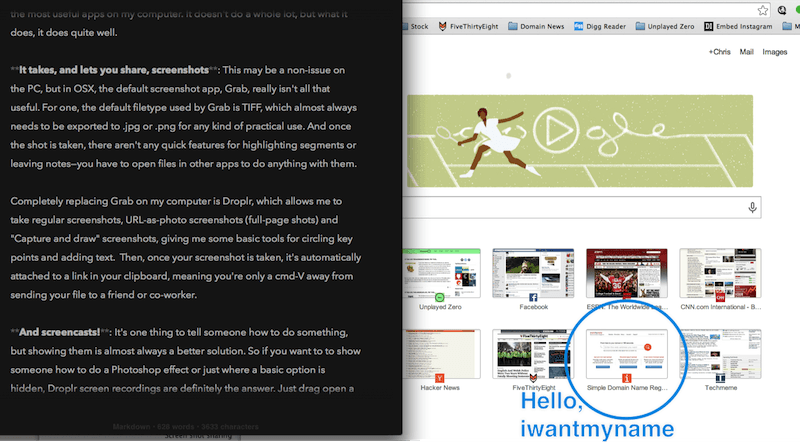
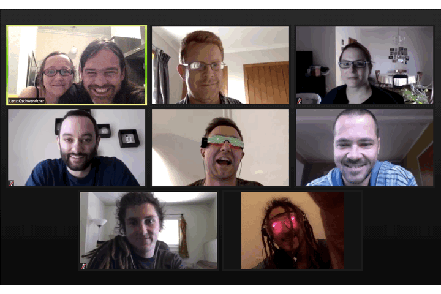

August 26, 2014

Quietly resting on my desktop nav, next to the icons for Twitter, Dropbox, OnePassword, Wifi and Finder, is the stylized Droplr drop—arguably one of the most useful apps on my computer. It doesn’t do a whole lot, but what it does, it does quite well.

Read more →
August 22, 2014

Amongst the craziness that are the new generic top-level domains (gTLDs), cities seem to be a bastion of pragmatism. They just make sense—if your company or brand is localized to a city, a city TLD gives your site an easily remembered identifier in a namespace that will have much less competition.
Read more →
August 20, 2014


The one truth about growing a company is that at some point you’ll run out of qualified friends to employ. For us, our first hire outside of that group was a developer, because we badly needed someone who was good at the things we sucked at. And our hire was a good one, as he is an absolute expert in his field—but his most important trait was that he fit in really well with the team. Ever since our first hiring experience, we’ve made fitting in a top priority when adding team members, and it’s worked out extremely well.
Read more →
August 19, 2014

Last month my son and I jumped into a big silver bird and headed north to check out the start-up scene in tropical Singapore. During our visit to the business friendly island state we not only enjoyed the famous nighttime cuisine, but also made many new friends in the start-up community.
We were made welcome at co-working space JFDI Asia, also widely regarded as Asia’s leading tech accelerator. The JFDI crew had only just recovered from their big demo day the previous week, so the place was still abuzz with “joyful” entrepreneurs, mentors and interns, especially so as there was also a visit by Dave McClure and Geeks On A Plane that same week.
Read more →
August 15, 2014

Ask a random business owner or entrepreneur what the hardest part of their startup process was and you’ll likely hear “naming”. Naming your business, brand or simple blog can be extremely challenging because there’s no exact science or guaranteed process to lean on. It needs to be unique but uncomplicated, easy to say but different enough to separate you from the pack, and ultimately, it needs to embody your story. Or maybe it doesn’t.
One thing is certain though—when you’re starting your naming process, you should always keep your domain name possibilities in mind. In this modern internet era, your website might just be your brand’s most public portal, so you need to make it count.
Here are a few quick tips to make your naming process a bit easier.
Read more →
August 13, 2014

Google rankings. Just say the phrase and you’ll raise the blood pressure of countless website owners, because for as many professionals as there are trying to crack the search engine optimization (SEO) code, it’s still a moving target. New updates to the ranking algorithm are coming out all the time, and SEO practices that are considered ‘standard’ one day might be damaging the next.
But every once in a while Google will announce a very specific algorithm change that can be applied by nearly everyone, without any drastic changes to content or site structure.
Read more →
August 12, 2014

So first, a definition—”Domain hijacking or domain theft is the act of changing the registration of a domain name without the permission of its original registrant.”
And yes, domain hijacking does indeed happen, so you should be absolutely certain that your domain is as safe as possible.
Read more →
August 9, 2014

We’ve now launched more than 150 new generic top-level domains (gTLDs), and as expected, they’re each experiencing different levels of popularity. Some, like .berlin, .club and .在线 are doing quite well, but none have blown up to the level of mass acceptance—none are considered normal yet.
To get to that point, we need to start seeing more of these sites in the wild. Ideally, a big brand will kickstart the movement by transitioning their .com to a new gTLD, but there are already a number of sites that have made the switch. Here are a few of the best/most interesting we’ve found so far.
Read more →
August 7, 2014

From the Official Gmail Blog:
In 2012, an organization called the Internet Engineering Task Force (IETF) created a new email standard that supports addresses with non-Latin and accented Latin characters (e.g. 武＠メール.グーグル). In order for this standard to become a reality, every email provider and every website that asks you for your email address must adopt it. That’s obviously a tough hill to climb. The technology is there, but someone has to take the first step.
Today we’re ready to be that someone. Starting now, Gmail (and shortly, Calendar) will recognize addresses that contain accented or non-Latin characters. This means Gmail users can send emails to, and receive emails from, people who have these characters in their email addresses. Of course, this is just a first step and there’s still a ways to go. In the future, we want to make it possible for you to use them to create Gmail accounts.
Read more →
August 6, 2014

If there’s one piece of advice we could give to someone who is starting a website or blog, it’s that you should take some time to pick the right web platform for your needs. Some are great for blogging, some for e-commerce, some for being social. And there’s always the option of creating something entirely custom—although you’d either need some web development know-how or the resources to hire someone. Most sites though (including many of the biggest on the web) are created with one of the many platforms currently available.
For absolute beginners, we usually recommend a hosted solution—the platforms that bundle modern content management systems (CMS) with hosting space. They can cost a bit more, and you’ll lose some development flexibility, but the benefits of using something that’s truly plug-and-play often outweigh the lack of control.
But if you’re comfortable managing your own hosting space, you’re open to a whole world of platforms that give you control over even the smallest details. And the most popular of these platforms is WordPress (.org, not .com, which is a hosted platform), which in 2013 made up 18.9% of the internet and was downloaded 46 million times.
If WordPress is something you’re looking into, here’s a rundown of how to link your iwantmyname domain to Bluehost, one of our favorite web hosts.
Read more →
Older posts